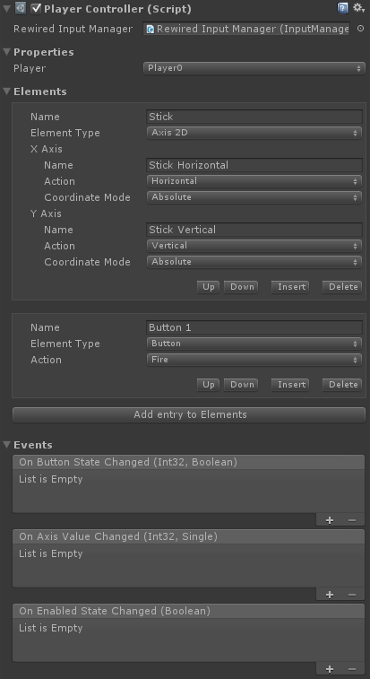
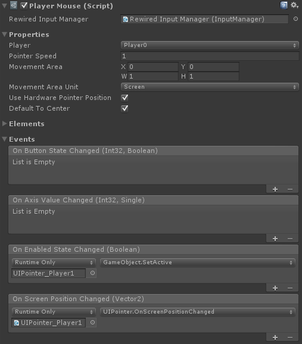

Player Controllers
Overview
A Player Controller is a form of a controller that uses a Player's Actions as the source of input for element values. Essentially, it is a controller-shaped interface for a Rewired Player. Player Controllers were primarily developed for the Player Mouse which can be used to easily create a virtual mouse pointer which can be used to interact with Unity UI using any underlying controller type. Regardless, a Player Controller could be used for any purpose you want.
Player Controllers are not equivalent to other Rewired Controllers and do not perform the same function. They do not exist unless you instantiate them, they cannot be mapped with Controller Maps, their bindings can't be saved and loaded, etc. They exist completely separately from all other Controllers in Rewired, and they are completely managed from creation to destruction by you.
To illustrate the relationship between a Player Controller's element values and the underlying Player, take for example, a Player Controller with 2 axes and 1 button. These elements could be mapped as follows:
- X Axis = Player 0, "Move Horizontal"
- Y Axis = Player 0, "Move Vertical"
- Button 1 = Player 0, "Fire"
When you get the value of "Button 1" from the Player Controller, it is equivalent to calling player.GetButton("Fire") on Player 0.
Player Controller elements may modify the values received from the Player and output a processed value. For example, for a Player Mouse, you would normally want the X and Y axes to return relative delta values like a real mouse. The Player Mouse's axes can transform absolute axis input coming from a Player into a relative delta value so the consumer of the input can be written to simply expect mouse delta values.
Do not confuse Player Controllers with Custom Controllers. They do not serve the same purpose.
Controllers
Player Controller
Player Controller is a controller that uses Player Actions as the input sources for controller elements. Player Controller can be created with any number of axes and buttons and may be configured however you like.
A Player Controller uses a single Player as the source of input for its elements. Each element must have an Action assigned to it in order for it to return input values.
Creating
You can create a Player Controller in two ways:
- Add the Player Controller component to a GameObject and configure settings in the inspector.
- Instantiate a PlayerController via scripting:
// Create definition object to pass in values when creating the Player Controller PlayerController.Definition definition = new PlayerController.Definition() { playerId = 0 // set the owning Player }; // Create a list of elements you want in the Player Controller definition.elements = new List<PlayerController.Element.Definition>() { // Create an Axis 2D called "Stick" and assign "Horizontal" and "Vertical" to the two axes. new PlayerController.Axis2D.Definition() { name = "Stick", xAxis = new PlayerController.Axis.Definition() { actionName = "Horizontal" }, yAxis = new PlayerController.Axis.Definition() { actionName = "Vertical" } }, // Create a Button called "Button 1" and assign "Fire". new PlayerController.Button.Definition() { name = "Button 1", actionName = "Fire" } }; // Create the Player Controller PlayerController playerController = PlayerController.Factory.Create(definition); // ... use the controller

| General Options |
|
| Rewired Input Manager | (Optional) Link the Rewired Input Manager here for easier access to Action ids, Player ids, etc. |
| Properties | |
| Player Id / Player | The Player used for the source of input. |
| Elements | The elements that will be created in the controller. |
| Events | |
| On Button State Changed | Triggered the first frame the button is pressed or released. |
| On Axis Value Changed | Triggered when the axis value changes. |
| On Enabled State Changed | Triggered when the controller is enabled or disabled. |
Player Mouse
A Player Mouse is a type of Player Controller. In addition to the features of Player Controller, Player Mouse also tracks a screen position which can be used to drive a software mouse pointer. The default setup's axes output delta values regardless of the underlying input source for those axes, so a Player Mouse can be used in scripts that were written expecting mouse input, but the actual input can come from a joystick or the keyboard for example.
Creating
You can create a Player Mouse in two ways:
- Add the Player Mouse component to a GameObject and configure settings in the inspector.
- Instantiate a PlayerMouse via scripting:
// Create the Player Mouse with the default elements and options PlayerMouse mouse = PlayerMouse.Factory.Create(); // Set the owner mouse.playerId = playerId; // Set up Actions for each axis and button mouse.xAxis.actionName = horizontalAction; mouse.yAxis.actionName = verticalAction; mouse.wheel.yAxis.actionName = wheelAction; mouse.leftButton.actionName = leftButtonAction; mouse.rightButton.actionName = rightButtonAction; mouse.middleButton.actionName = middleButtonAction; // ... use the mouse
Element Actions
Actions are used to provide value to each controller element.
You must create Actions in the Rewired Input Manager for each of mouse elements you want to use. It doesn't matter what these Actions are named, but each Player Mouse element must be assigned an Action from which it will draw its value. As per standard Rewired practice, the you must assign these Actions to Controller Maps of various types and assign those to the Player in order for them to be used.
For example, if you want to control the mouse pointer with the physical mouse, you will need to create a Mouse Map with at least the Left Button assigned to your Action, then assign that Mouse Map to your Player. (The X and Y axis values will be taken from the physical mouse's screen position if Use Hardware Pointer Position is enabled and the Player has the physical mouse assigned to it -- player.controllers.hasMouse == true.)
If you want to control the mouse pointer with a gamepad, you will need to create a Joystick Map with the Actions assigned to at least the Left Stick X/Y and some buttons. That Joysick Map needs to be assigned to the same Player that owns the Player Mouse.
In both cases, you must assign the Actions that you want to control the Player Mouse's X, Y, Wheel axes and Left, Right, and Middle buttons in the Elements fields in the inspector or via scripting after instantiating the Player Mouse.
If this sounds confusing, study the Player Controller inspector above looking at the Elements section. See how the X axis is assigned the Action "Horizontal" and the Y axis is assigned the Action "Vertical". This means the value of the X axis comes from the Player's "Horizontal" Action and the value of the Y axis comes from the Player's "Vertical" Action. It's exactly the equvalent of this:
- Player Mouse X = player0.GetAxis("Horizontal");
- Player Mouse Y = player0.GetAxis("Vertical");
Displaying a Pointer
The Player Mouse does not include a pointer. It is up to you to provide a pointer of the type you choose and set it up to be driven by the Player Mouse's screen position. The most common way to do this would be to use the OnScreenPositionChangedEvent in the inspector and link it to a script on your pointer which takes the screen position and moves the object. (You can also use the equivalent event in scripting to achieve the same thing.)
An example of how to position a Sprite pointer:
public void OnScreenPositionChanged(Vector2 screenPosition) {
Vector3 worldPos = Camera.main.ScreenToWorldPoint(new Vector3(screenPosition.x, screenPosition.y, distanceFromCamera));
pointer.transform.position = worldPos;
}
An example of how to position the pointer on a Unity UI Canvas:
public void OnScreenPositionChanged(Vector2 screenPosition) {
RectTransform canvasRectTransform = transform.root.GetComponentInChildren<Canvas>().GetComponent<RectTransform>();
Rect rootCanvasRect = canvasRectTransform.rect;
Vector2 viewportPos = Camera.main.ScreenToViewportPoint(screenPosition);
viewportPos.x = (viewportPos.x * rootCanvasRect.width) - canvasRectTransform.pivot.x * rootCanvasRect.width;
viewportPos.y = (viewportPos.y * rootCanvasRect.height) - canvasRectTransform.pivot.y * rootCanvasRect.height;
(transform as RectTransform).anchoredPosition = viewportPos;
}
Enabling and Disabling
When the Player Mouse component or GameObject is disabled, the Player Mouse will no longer return any values or trigger any events. You can use the OnEnabledStateChanged event to enable and disable the target pointer by simply enabling and disabling the Player Mouse.
Examples

| General Options |
|
| Rewired Input Manager | (Optional) Link the Rewired Input Manager here for easier access to Action ids, Player ids, etc. |
| Properties | |
| Player Id / Player | The Player used for the source of input. |
| Pointer Speed | The pointer speed. This does not affect the speed of input from the mouse x/y axes if useHardwarePointerPosition is enabled. It only affects the speed from input sources other than mouse x/y or if mouse x/y are mapped to Actions assigned to Axes. |
| Movement Area | The allowed movement area for the mouse pointer. Set Movement Area Unit to determine the data format of this value. This rect is a screen-space rect with 0, 0 at the lower-left corner. |
| Movement Area Unit | The unit format of the movement area. This is used to determine the data format of Movement Area. |
| Use Hardware Pointer Position | If enabled, the hardware pointer position will be used for mouse input. Otherwise, the position of the pointer will be calculated only from the Axis Action values. The Player that owns this Player Mouse must have the physical mouse assigned to it in order for the hardware position to be used, ex: player.controllers.hasMouse == true. |
Default To Center |
If enabled, the screen position will default to the center of the allowed movement area. Otherwise, it will default to the lower-left corner of the allowed movement area. |
| Elements | The elements that will be created in the controller. |
| Events | |
| On Button State Changed | Triggered the first frame the button is pressed or released. |
| On Axis Value Changed | Triggered when the axis value changes. |
| On Enabled State Changed | Triggered when the controller is enabled or disabled. |
| On Screen Position Changed | Triggers when the screen position changes. Link this to your pointer to drive its position. |